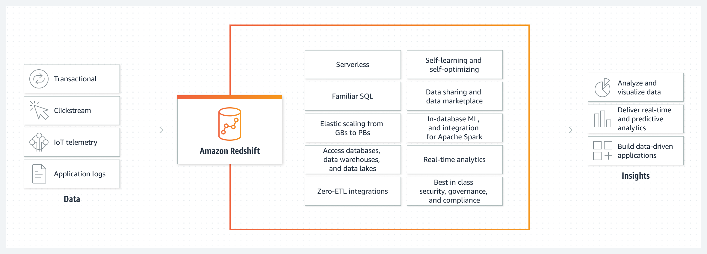

AWS Database Services
What problem do databases solve?
Earlier, companies used to deploy databases on in-house servers. They would need to hire people for the day-to-day maintenance and performance troubleshooting of these in-house databases
Databases are important backend systems that are used to store, manage, update, and analyze data for all types of applications
Types of AWS Databases
AWS Cloud Databases provides a broad selection of purpose-built databases for any enterprise. AWS databases support all database management tasks, such as server provisioning, patching, configuration, and backups.
Advantages of AWS Databases

Fully Managed
Scalable
Highly available
Security
RDS (Relational Database Service)

Relational Database Service (RDS) is a fully managed service provided by AWS. It allows users to set up, manage and monitor a database in the cloud. Seven engines are provided by the service to choose from MySQL, MariaDB, Oracle, and SQL Server, and these engines provide support for DBMSs like MySQL.
Benefits of Amazon RDS
- It provides high performance and is fast to scale
- It provides high availability as a result of two distinct replication features, namely, Multi-AZ deployments and Read Replicas
- It automatically takes care of Backup and Restore by patching up the AWS database software
- It also takes care of Maintenance and Upgrades, automatically
Redshift
Best for: Large-scale data warehouses and data migrations, analytics
Amazon Redshift is a petabyte-scale data warehousing service provided by Amazon and is a fully managed service. It allows us to interpret data to gain more insight into the business and customers. It offers query performance using SQL-based tools and business intelligence applications, regardless of data set size.
- Parallel queries across multiple nodes can be performed
- Automatically backed up to Amazon S
- Cost-effective over other data warehouse solutions
- Built-in security as Amazon Redshift provides end-to-end encryption and enables users to configure firewall rules
Aurora
Best for: SaaS apps like ERP, CRM, and eCommerce
Amazon Aurora is another Relational Database Engine, fully managed by AWS and compatible with MySQL and PostgreSQL. It has better performance capabilities than most commercial databases, with throughput capability of up to five times when compared to MySQL and three times when compared to PostgreSQL.
Benefits of Amazon Aurora
- It provides high performance and scalability
- It’s highly secure
- It offers high availability and durability
- It’s fully managed
DynamoDB
Best for: Mobile and web apps, gaming, IoT

Amazon DynamoDB is a NoSQL database service fully managed by the AWS cloud. It provides fast, predictable, and seamlessly scalable performance. It doesn’t require any schema. In DynamoDB, there are basically three core components: TABLES, ITEMS, ATTRIBUTES
Benefits of Amazon DynamoDB
- Easy to set up and manage
- Data is automatically replicated across multiple Availability Zones
- Secure due to provision of encryption at rest
- Provision for on-demand Backup and restoration capabilities
ElastiCache
Best for: Caching, chat, BI and analytics, session store, gaming leaderboards
There are various benefits of using Amazon ElastiCache. Besides being easy to set up and deploy, ElastiCache also improves applications’ performance as it reduces disk reads
Benefits of Amazon ElastiCache
- Response time: ElastiCache reduces the response time as it retrieves data from a fast in-memory system. It reduces the dependence on disk-based databases which are usually slower
- Scalability: Amazon ElastiCache is designed to be able to modify itself, automatically. It can scale out or scale up depending on the fluctuating application requirements
- Complete management: Amazon ElastiCache is fully managed, so the common administrative tasks such as hardware provisioning, failure recovery, backups, and more are all automated